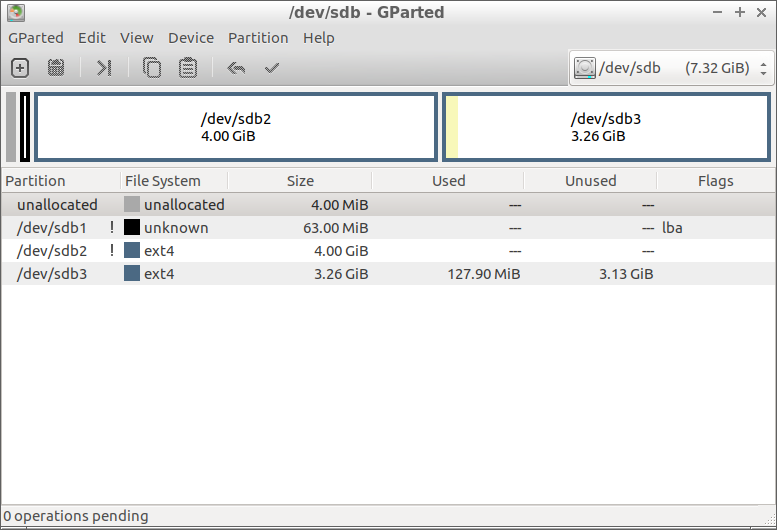
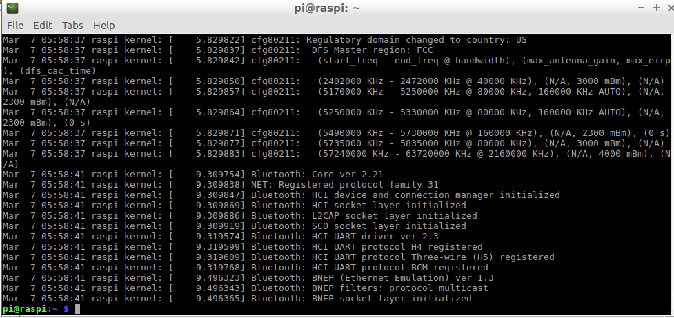
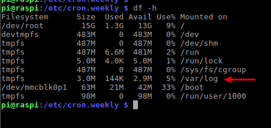
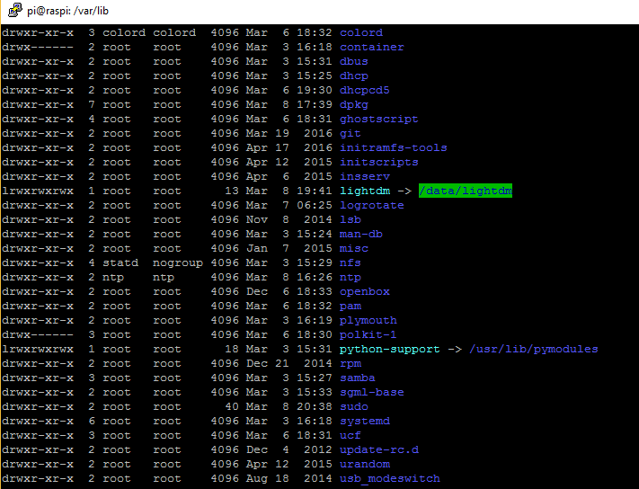
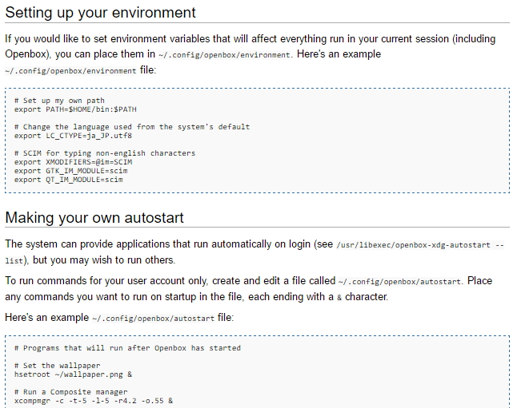
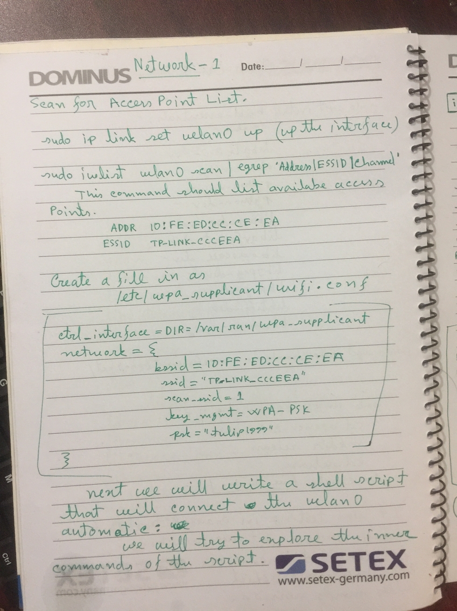
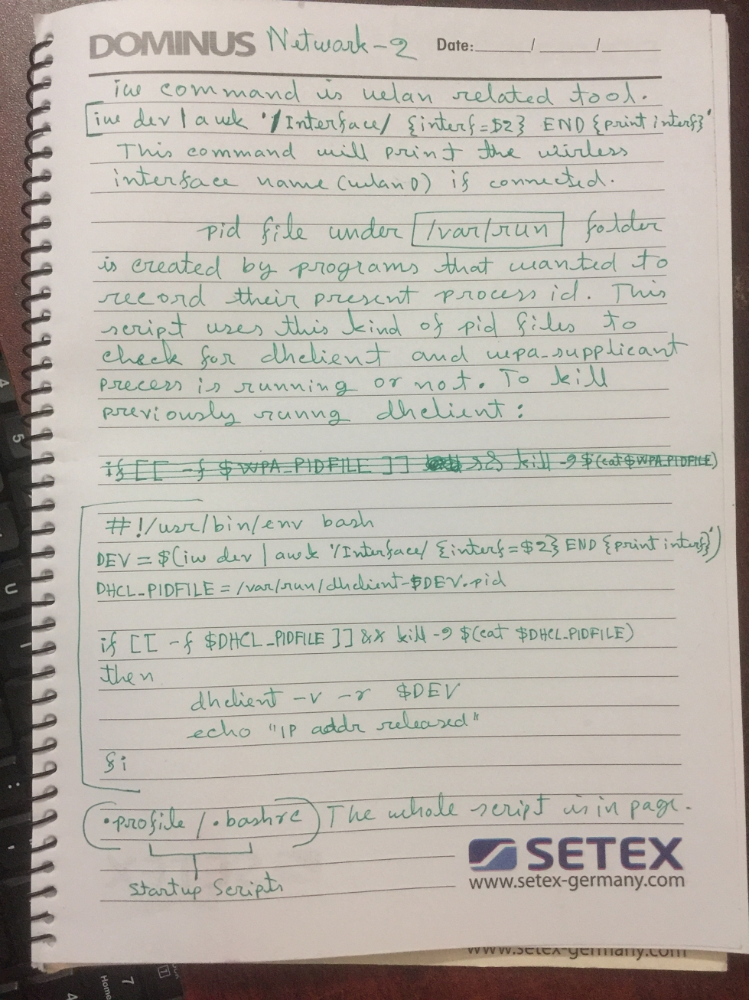
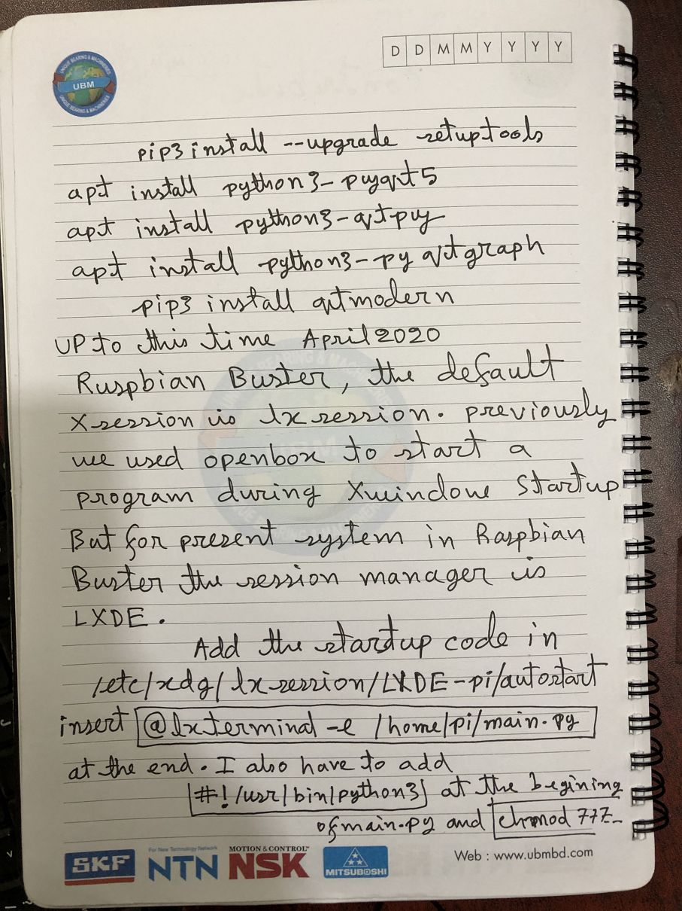
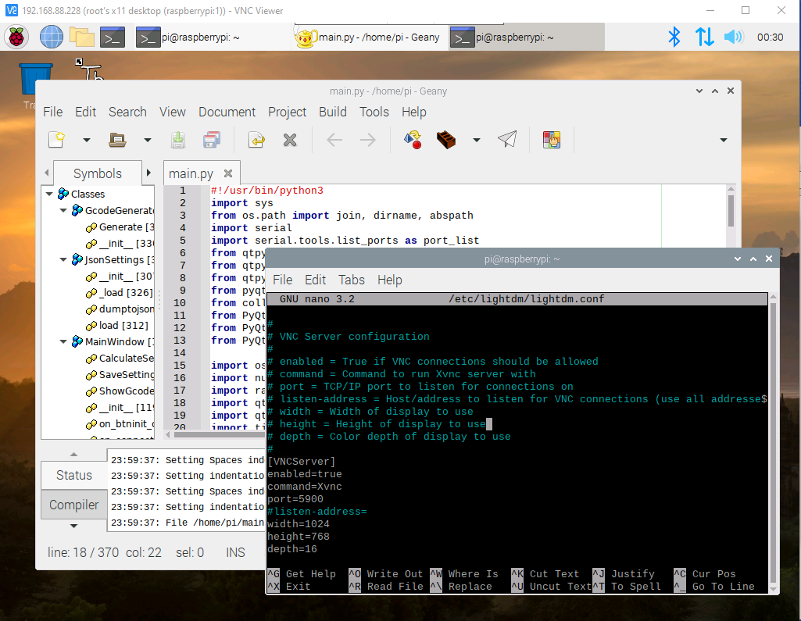

Raspberry Pi Raspbian Jassie Lite Initial Setups
Image downloaded in ssh
After image burn to SD, create a new empty file namedInitial User:
SSH Commands Link
SSH to a specific port other than 22 :
sudo ssh -p 3238 pi@144.48.2.11Raspberry Pi Low Disk R/W Setup
Create a robust Raspberry PI setup for 24×7 operation
2014/06/25 / NARCISOCEREZOSaved in
Write the ISO image : Installing Images
unmount /dev/sdd1 or unmount mmcblk0p1 and unmount mmcblk0p2 unmount all partitions of the SDCARD.dd bs=4M if=2017-02-16-raspbian-jessie.img of=/dev/sdd status=progresssyncUse
raspi-config command to set VRAM to 16Mb. Now check
proc /proc proc defaults 0 0 /dev/mmcblk0p1 /boot vfat defaults 0 2 /dev/mmcblk0p2 / ext4 noatime,defaults 0 1 # a swapfile is not a swap partition, so no using swapon|off from here on, use dphys-swapfile swap[on|off] for that
That means that your SD cards is /dev/mmcblk0, you have partition 1 of type vfat mounted as /boot, and partition 2 of type ext4 mounted as root.
Create a data partition
Resize the partition using Gparted:
$ sudo fdisk /dev/mmcblk0 Command (m for help): p Disk /dev/mmcblk0: 29,8 GiB, 32010928128 bytes, 62521344 sectors Units: sectors of 1 * 512 = 512 bytes Sector size (logical/physical): 512 bytes / 512 bytes I/O size (minimum/optimal): 512 bytes / 512 bytes Disklabel type: dos Disk identifier: 0x0cf63fa8 Device Boot Start End Sectors Size Id Type /dev/mmcblk0p1 8192 131071 122880 60M c W95 FAT32 (LBA) /dev/mmcblk0p2 131072 7870463 7739392 3,7G 83 Linux
Partition type p primary (2 primary, 0 extended, 2 free) e extended (container for logical partitions)
Selected partition 4 First sector (2048-62521343, default 2048): 7870464
Be careful here, it says that the default first sector is 2048 because /boot starts at 8192, but you must use the next free sector after the root partition, in this case 7870464.
Now we choose the size, if we hit enter it will use all available space (recommended option), but we can set a specific size easily (500Mb here):
Last sector, +sectors or +size{K,M,G,T,P} (8894464-62521343, default 62521343): +500M
If you type p to print the partition table it should look like:
Device Boot Start End Sectors Size Id Type /dev/mmcblk0p1 8192 131071 122880 60M c W95 FAT32 (LBA) /dev/mmcblk0p2 131072 7870463 7739392 3,7G 83 Linux /dev/mmcblk0p3 7870464 8894463 1024000 500M 83 Linux
After rebooting you need to format the partition, we’ll use ext4:
sudo shutdown -r now mkfs.ext4 /dev/mmcblk0p3
Let’s create a mount point for our data partition:
And create also a folder that will need afterwards:
sudo mkdir /data sudo mkdir /var/spool/mqueue
Now lets change /etc/fstab using our favorite editor, it should end up like:
proc /proc proc defaults 0 0 /dev/mmcblk0p1 /boot vfat ro 0 0 /dev/mmcblk0p2 / ext4 noatime,ro 0 0 /dev/mmcblk0p3 /data ext4 noatime,ro 0 0 tmpfs /var/log tmpfs defaults,noatime,nosuid,mode=0755,size=50m 0 0 tmpfs /var/lib/sudo tmpfs defaults,noatime,nosuid,mode=0755,size=2m 0 0 tmpfs /var/spool/mqueue tmpfs defaults,noatime,nosuid,mode=0700,gid=12,size=30m 0 0 tmpfs /tmp tmpfs defaults,noatime,mode=1777,size=30m
So, we changed boot and root partitions to readonly (ro) and removed the chkdsk option. This last is important because sometimes, as the PI does not have a hardware clock, after reboot it will determine that a file system has changes in the future and wait for a manual fsck to be confirmed. That’s not what we want for our resilient setup.
We added the partition 3 mounted at
And we created mount points using tmpfs (RAM file system) for several programs and processes that need to write to the filesystem to work properly. You can change the maximum amount of RAM used for that if you want, but remember that the size is the maximum, it will use only the RAM as it needs it, up to that maximum. If a mount point is empty, it will use almost no RAM.
We will now apply a little trick to save RAM, by pointing
$ cd /var $ sudo rmdir tmp $ sudo ln -s /tmp .
That way /tmp and /var/tmp go to the same ram filesystem.
Ok, now a few tweaks to make everything work as expected.
Prevent fsck from running at boot:
sudo tune2fs -c -1 -i 0 /dev/mmcblk0p2 sudo tune2fs -c -1 -i 0 /dev/mmcblk0p3
From
fsck.repair=yes .Remove temporary fake-hwclock files:
Edit Logrotate configuration
Log rotate needs a place to keep track of its state to work, so we need to modify /etc/cron.daily/logrotate, adding –state /var/log/logrotate.state to the command line, so it ends up like:#!/bin/sh test -x /usr/sbin/logrotate || exit 0 /usr/sbin/logrotate --state /var/log/logrotate.state /etc/logrotate.conf
Now we have to remove the swap:
$ sudo update-rc.d -f dphys-swapfile remove $ sudo swapoff /var/swap $ sudo rm /var/swap
Finally, we disable man indexing:
EditAnd that’s it. You can now reboot your PI:
sudo shutdown -r nowWriting when you need it
Ok, I’ve got my PI up and running, but I need to update it, add new programs, data, How do I do that?That’s pretty easy!
You need to remount the filesystem you want to modify for writing. For example, to write something on
sudo mount -o remount,rw /dataWhen you are finished just type:
sudo mount -o remount,ro /dataI did search a lot to make this possible, and a lot of credit goes to these pages and their authors:
http://www.a-netz.de/2013/02/read-only-root-filesystem/
http://www.raspberrypi.org/forums/viewtopic.php?f=29&t=22596
http://www.element14.com/community/message/67167/l/re-how-do-i-permanently-disable-the-swap-service#67167
http://www.cyberciti.biz/faq/linux-unix-bypassing-fsck/
Step-By-Step Testing tmpfs or RAMDISK file system transfer
As previous instruction, A disk location can be mounted on tmpfs. So that any file under that locationshould be temporary. Because tmpfs is RAMDISK filesystem module. At first I am trying to temporise the tmpfs /var/log tmpfs defaults,noatime,nosuid,mode=0755,size=3m 0 0 After reboot we observed that

Now
df -h reflects the changes. 
Also add the following lines to
tmpfs /var/lib/sudo tmpfs defaults,noatime,nosuid,mode=0755,size=2m 0 0 tmpfs /var/spool/mqueue tmpfs defaults,noatime,nosuid,mode=0700,gid=12,size=30m 0 0 tmpfs /tmp tmpfs defaults,noatime,mode=1777,size=30m
Here
It seems that I did made this SDCARD readonly as I could not write any files in my user location. Now it is needed to create a
lightdm and OpenBox. startx login without password
Downloaded in Packages to install::
sudo apt-get install xserver-xorg sudo apt-get install openbox sudo apt-get install lightdm
lightdm writes its own data in

This tweaks also need to edit a config file:
user-authority-in-system-dir=trueautologin-user = piSo that the lightdm will start X and autologin without user and password.
Autostart A gui program after X window starts
http://openbox.org/wiki/Help:Autostart
Create a new file as
epiphany eurekabd.com/Doctorola/ to start a browser with a page.Apply
sudo chmod a+x autostart.
For 10.1 inch waveshare resistive touce display download git clone https://github.com/waveshare/LCD-show.git. Resolution - 1024x600 .
Install pasystray to enable pulseausio through headphone jack.
PyDuino_0.0.0.3 On RPi
Installsudo pip install pyserialThen run pyduino.py .
vnc vncviewer vncserver tightvncserver
With this minimal lightdm setup I am facing a problem to run PyQt program with sudo previlage. To setup tightvncserver I followed my prevoius tutorial fromSome wlan iw network commands

Apply executable permission to all files recursively:
sudo chmod -R 777 /home/jibon/scriptswlan network on Raspberry Pi 2 / RaspberryPi 2 / RaspberryPi 3
Recently I am having trouble to connect to WiFi network on Raspberry Pi 2 B+. One of the solution is given in this LINK. Here folllowing are the steps:sudo nano /etc/network/interfaces to edit this file.auto wlan0
# Please note that this file is written to be used with dhcpcd
# For static IP, consult /etc/dhcpcd.conf and 'man dhcpcd.conf'
# Include files from /etc/network/interfaces.d:
source-directory /etc/network/interfaces.d
auto lo
iface lo inet loopback
iface eth0 inet manual
auto wlan0
allow-hotplug wlan0
iface wlan0 inet dhcp
wpa-conf /etc/wpa_supplicant/wpa_supplicant.conf
allow-hotplug wlan1
iface wlan1 inet manual
wpa-conf /etc/wpa_supplicant/wpa_supplicant.conf
 Also uncomment the stuffs from /etc/lightdm/lightdm.conf : [VNCServer] section.
